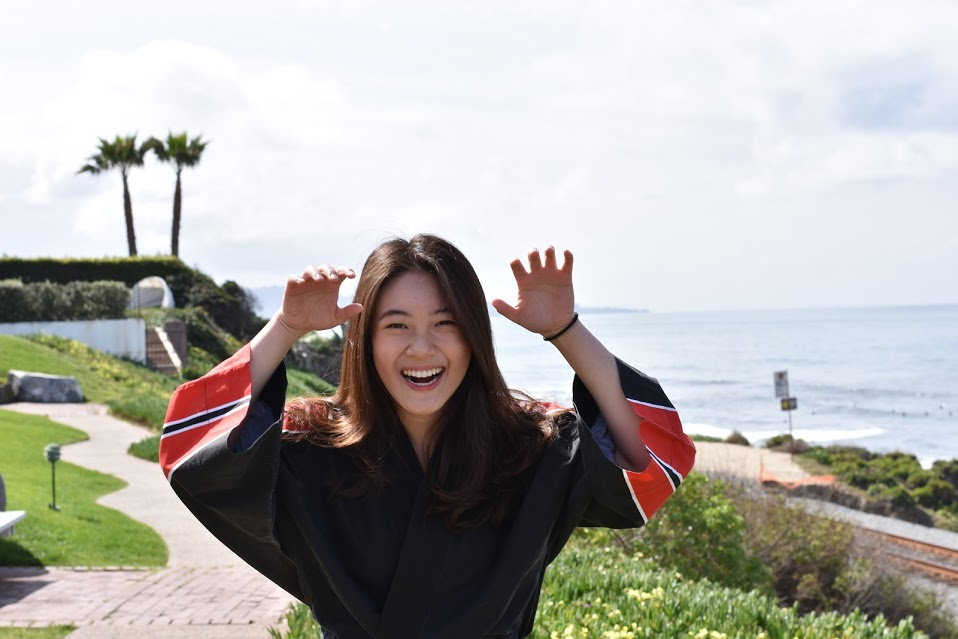
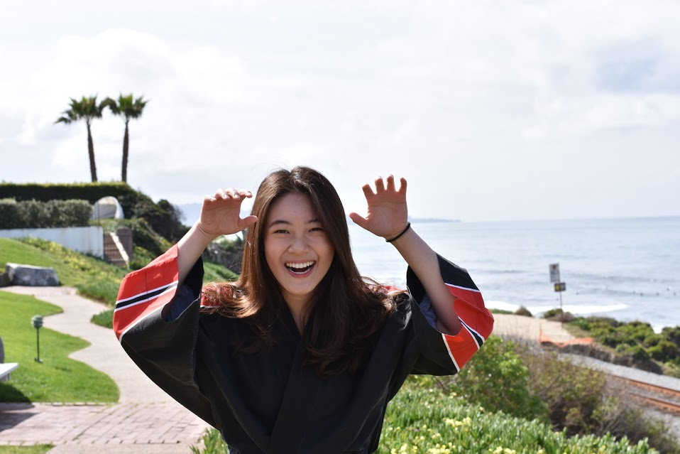

Political Science-International Relations
4th year
Taifuu
“It is a song that demonstrates such raw emotion and energy that I find an enthralling part of the taiko performance experience.”
Human Biology
4th year
TAIFUU!
“It’s a song I can get completely absorbed into, and it makes me feel a little cooler than I actually am for a little bit”
Physiology and Neuroscience
4th year
Kamaitachi/Tanoshii
“Kamaitachi because it's one of the more unique songs out of Asa's repertoire and it's visually S T U N N I N G. Tanoshii is a classic and is fun to play just like its name implies.”

 Kana Okafuji
Kana Okafuji
Bioengineering
4th year
Taifuu
“Taifuu because of its intensity and power. I love how the varying sections of the song conveys the different stages and feelings of a real typhoon.”
Human Biology
4th year
Jikan
“I feel cool 😎 .. but Kodomo too, I can freely be weird 😏”
Applied Math
4th year
Kodomo
“I love Kodomo because of the juvenile energy exhibited by the performers in every rendition! Its expressive movements and rousing kiais will leave you verklempt.”
Physics
3rd year
Arashi!
“It makes me so happy and it's about a storm and I LOVE storms!!”
International Business
3rd year
Moving Forward
“I like Moving Forward for its intricate movements and rhythm.”
Mechanical Engineering
3rd year
Kodomo
“It's one of the songs that I think really lets our members show the genuine bonds that we've formed with each other. To me that's the most important part about playing. Developing a true relationship between one another as friends and fellow colleagues.”
 
Yatavee Vajaphattana

Yatavee Vajaphattana
Neuroscience and Physiology
3rd year
Kamaitachi
“The beat/rhythm is very fun to play”
Economics
4th year
Taifuu!
“It's cool as heck and I hope that someone out there will see Taifuu and be inspired to join the same way I was.”
Psychology
2nd year
Moving Forward/Tanoshii
“Moving Forward is really fun to play, especially with the very intricate choreography and it really distinguishes itself from other songs. I didn't like Tanoshii until I watched the uniqlo performance and realized how much the performers matter in making the song fun to watch and feel a part of.”
Economics
2nd year
Arashi
“Fun.”
Structural Engineering
2nd year
Kamaitachi
“The phrases are really interesting and well-written, and the choreography is also super cool. The song is really exciting to watch.”
Applied Mathematics
2nd year
Arashi
“It’s one of the first songs we learned and it gave me the opportunity to grow closer to the rest of my Gen. (also because it’s in my name ;)”
Human Biology
2nd year
Kodomo
“I like Kodomo because it is a song where the performers can really just have fun with each other. When I watch it, I can’t help but smile during the whole piece and it makes me feel all warm and fuzzy inside.”
Structural Engineering
2nd year
Kodomo
“I really like kodomo because it’s a very cute, catchy song that makes me feel very warm and home-y when I watch. It always reminds me of how grateful I am for the fun, exciting second family I have that is Asa”
Computer Science
2nd year
Taifuu!
“It gives me goosebumps every time.”